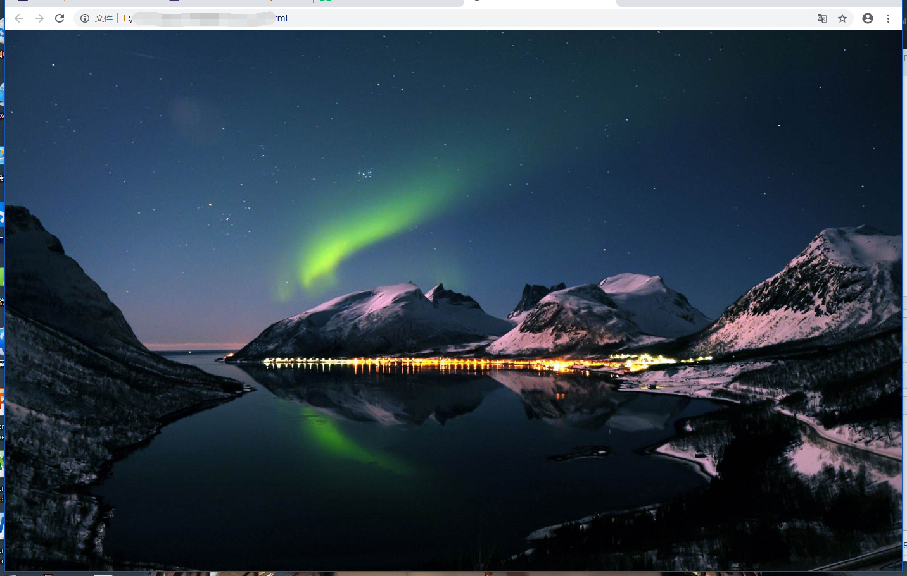
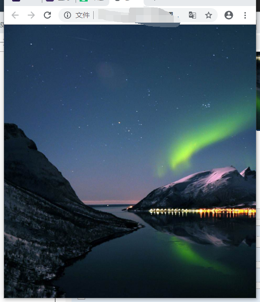
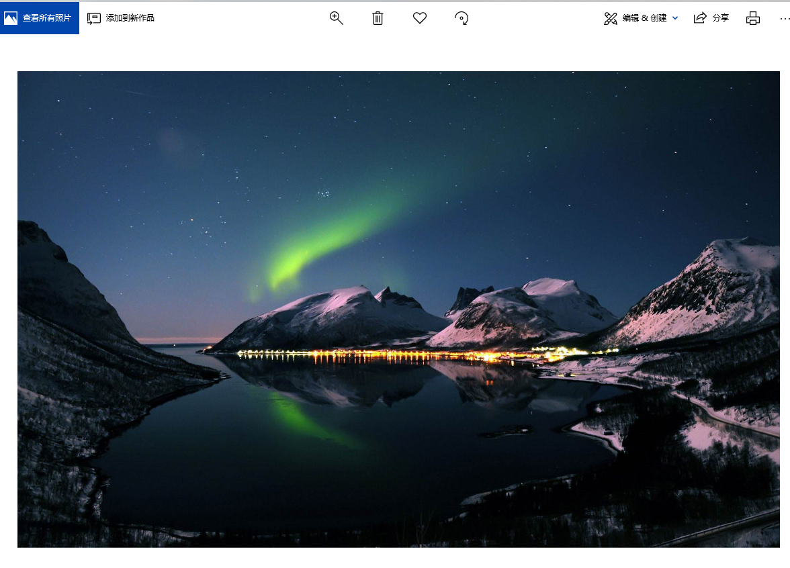

在做登陆页面等的首页的时候，经常会遇到需要放一张背景大图的情况，并且需要图片按比例缩放，来适应不同屏幕的大小。
html代码如下：
1 <!DOCTYPE html>
2 <html lang="en">
3
4 <head>
5 <meta charset="UTF-8">
6 <meta name="viewport" content="width=device-width, initial-scale=1.0">
7 <meta http-equiv="X-UA-Compatible" content="ie=edge">
8 <link rel="stylesheet" href="../css/login.css"><!-- 我的css代码路径 -->
9
10 <title>。。。</title>
11 </head>
12
13 <body>
14 <div class="bgimg">
15 </body>
16
17 </html>
css代码如下：
1 .bgimg{
2 position:fixed;
3 top: 0;
4 left: 0;
5 width:100%;
6 height:100%;
7 min-width: 1000px;
8 z-index:-10;
9 zoom: 1;
10 background-color: #fff;
11 background: url(../img/bg_login.jpg) no-repeat;
12 background-size: cover;
13 -webkit-background-size: cover;
14 -o-background-size: cover;
15 background-position: center 0;
16 }
分析一下css代码中的作用：
position:fixed; top: 0; left: 0;
这三句是让整个div固定在屏幕的最上方和最左方
width:100%; height:100%; min-width: 1000px;
上面前两句是让整个div跟屏幕大小一样，从而达到全屏效果。而min-width是为了实现让屏幕宽度在1000px以内时，div的大小保持不变，也就是图片不缩放。
z-index:-10;
zoom: 1;
zoom是CSS hack中专对IE6起作用的部分。IE6浏览器会执行zoom:1表示对象的缩放比例。兼容IE6、IE7、IE8浏览器，经常会遇到一些问题，可以使用zoom:1来解决，zoom有如下作用：1.触发IE浏览器的haslayout； 2.解决ie下的浮动，margin重叠等一些问题。
background-repeat: no-repeat;
图片平铺，不重复
background-size: cover; -webkit-background-size: cover; -o-background-size: cover;
上面三句是一个意思，就是让图片随屏幕大小同步缩放，但是有部分可能会被裁切，不过不至于会露白，下面两句是为chrome和opera浏览器作兼容。
background-position: center 0;
上面这句的意思就是图片的位置，居中，靠左对齐
效果如下：
大于1000px时:(截图太大了，我把图片缩小了点)

小于1000px时：

原图：(这个也太大了缩小了点)
